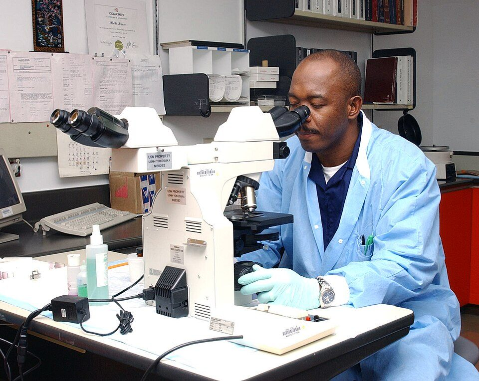

General information only. It does not replace advice from your care team and should not be used to choose a treatment.

_Yokosuka_Laboratory_Department.jpg){kind=link}
Why a biopsy is needed
A mammogram, a scan or a blood test can raise the suspicion of cancer, but cells almost always need to be seen under the microscope to confirm it. A biopsy means taking a tissue sample, and pathology is the medical specialty that examines it. The pathologist's report answers three questions: is it cancer? What exact type? What features will help choose treatment?
There are a few exceptions where diagnosis can be made without a biopsy, such as some liver cancers with a typical pattern on imaging.
How the sample is taken
- Fine needle aspiration: removes loose cells (cytology). Useful, for example, for thyroid nodules or lymph nodes.
- Core needle biopsy: takes cylinders of tissue, guided by ultrasound, mammography, CT or MRI. The most common type in breast, prostate, liver or lung.
- Endoscopic biopsy: during a colonoscopy, gastroscopy or bronchoscopy.
- Surgical biopsy: part or all of the lesion is removed, for example a lymph node when lymphoma is suspected.
- Bone marrow biopsy: for leukaemias, lymphomas and myeloma.
The risk of a biopsy spreading cancer is very low, and steps are taken to prevent it. With sarcomas, however, the biopsy should be planned by the centre that will do the surgery.
What the pathologist examines
- Morphology: the appearance and arrangement of the cells, stained with haematoxylin and eosin.
- Immunohistochemistry: stains that identify specific proteins. They show where the tumour came from and measure biomarkers such as hormone receptors, HER2 or PD-L1.
- Molecular tests: look for gene mutations, rearrangements or fusions, sometimes with next-generation sequencing panels.
How to read a report
The most common parts are:
- Histological type: for example "adenocarcinoma" or "squamous cell carcinoma".
- Grade: how different the cells look from normal ones (1 to 3 in many tumours).
- Size and margins: whether the edge of the removed tissue is clear of tumour.
- Lymphovascular and perineural invasion.
- Lymph nodes: how many were examined and how many contain cancer.
- Biomarkers and the pathological stage (pTNM).
Ask your team to explain the report. If the diagnosis is rare or uncertain, you can ask for a review by another expert pathologist, as part of a second opinion.
See also: Stage and grade, Biomarkers and molecular profiling.
Sources
- NCI. Pathology reports. cancer.gov
- The Royal College of Pathologists. rcpath.org
- WHO Classification of Tumours. tumourclassification.iarc.who.int